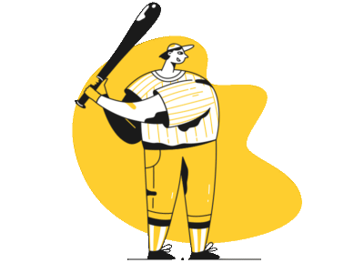

Améliorez la qualité de vos animations ✨

Katia Moreira
MMI 2 - 09/02/2023
Plan du cours
- 🚀 Optimisez les performances de vos animations
- ✨ Des animations plus naturelles grâce aux principes d'animations
- ⏱️ Les timings et easings à utiliser
- 👩💻 Prise en main d'une librairie d'animation JS : GSAP
1. 🚀 Optimisez les performances de vos animations
Optimisez les performances de vos animations
- 1 animation = 1 succession d'images
- FPS (frames per second) : nombre d'images par seconde

Optimisez les performances de vos animations
- Pour nos animations sur le web on vise les 60 FPS
- Taux de rafraichissement standard des écrans : 60Hz
Optimisez les performances de vos animations
- Pour un film d'animation le nombre de FPS est constant
- Sur le web il est variable et dépend du temps de calcul du navigateur (il peut mettre 0.04s à calculer une image puis 0.02s pour calculer l'image suivante)

Optimisez les performances de vos animations
- Pour calculer le FPS à partir du temps de calcul il suffit de faire un simple produit en croix
- Admettons que le temps de calcul du navigateur soit de 0.04s pour afficher une image :

FPS = 1 * 1 / 0.04 = 1 / 0.04 = 25 FPS
Optimisez les performances de vos animations
- Pour que le FPS de notre animation soit de 60FPS il faut que le navigateur ne mette pas plus de 16.6ms pour calculer une image
(1 / 0.0166 = 60 FPS) - Si le FPS est trop bas, notre animation va saccader, on appelle ça "jank"
🤔 Alors, comment fait-on
pour atteindre ce chiffre ?
Optimisez les performances de vos animations
💡 Il va falloir comprendre comment le navigateur calcule le rendu à afficher pour optimiser la performance de nos animations
Optimisez les performances de vos animations
Le "Pixel Pipeline"
- Corresponds aux étapes par lesquelles le navigateur passe pour afficher un pixel à l'écran
- Il faut repasser par ces étapes lors d'une animation ou lorsque l'on scrolle la page d'un site
Optimisez les performances de vos animations
- Etape JavaScript : traitement du code JS qui modifie la page (ajout d'un élément dans le DOM, modification du style), des animations et transitions CSS
- Etape Style : le navigateur défini quelles règles CSS appliquer à quels éléments du DOM
- Etape Layout : le navigateur détermine la taille des éléments et leur placement
Optimisez les performances de vos animations
- Etape Paint : le navigateur affiche les pixels à l'écran en utilisant les styles, dimensions et positions des étapes précédentes. Il dessine les pixels sur plusieurs couches ou calques
- Etape Composition : le navigateur compose la page à l'aide des différents calques créés à l'étape précédente
Optimisez les performances de vos animations
- Toutes ces étapes prennent du temps au navigateur
- On n'est pas nécessairement obligés de passer par toutes ces étapes lors du calcul d'une nouvelle image
- On va donc essayer de limiter le nombre d'étapes par lesquelles passer
Optimisez les performances de vos animations
Par exemple : Si on modifie la taille d'un élément (sa width), on doit recalculer le layout, le paint et la composition. On appelle ça le reflow.
Optimisez les performances de vos animations
Si on modifie la couleur d'un élément, on doit recalculer le paint et la composition. On appelle ça le repaint.
Remarque : quand on a un reflow on a aussi obligatoirement un repaint.
Optimisez les performances de vos animations
Si on modifie l'opacité d'un élément, on doit recalculer uniquement la composition.
Optimisez les performances de vos animations
- En fonction de la propriété CSS que l'on va animer on va donc obliger le navigateur à faire plus ou moins de calculs
- L'idée va donc de privilégier les propriétés CSS qui évitent un reflow ou un repaint
Optimisez les performances de vos animations
Le site csstriggers pour connaitre les étapes du pixel pipeline concernées par une propriété CSS
Optimisez les performances de vos animations
💡 Idéalement on privilégie toujours les propriétés transform et opacity.
Optimisez les performances de vos animations
- Ne pas utiliser les propriétés top, left ou width, height mais préférer transform
// ❌ Don't
.element {
top: 20px;
transition: top 0.2s;
}
.element.move-down {
top: 40px;
}
// ✅ Do
.element {
top: 20px;
transition: transform 0.2s;
}
.element.larger {
transform: translateY(20px);
}
Optimisez les performances de vos animations
⚠️ Eviter de mettre la propriété transition à all pour contrôler au mieux les propriétés que l'on anime
// ❌ Don't
.element {
transition: all 0.2s;
}
Optimisez les performances de vos animations
- Si on veut animer un box shadow penser à le mettre sur un élément à part et modifier son opacité

2. ✨ Des animations plus naturelles grâce aux principes d'animations
Optimisez les performances de vos animations
🎯 Notre objectif : rendre nos animations plus naturelles et engageantes.
Optimisez les performances de vos animations
- Les "Neuf Sages" ont participé à la création des principaux films d'animation de Disney
- Parmi eux Ollie Johnston et Frank Thomas publient en 1981 "The illusion of life" qui détaille 12 principes d'animation

Optimisez les performances de vos animations
- Ces principes permettent de produire une illusion très réaliste des mouvements des personnages (et des objets) de par leur adhésion aux lois de la physique, et aux réactions et expressions émotionnelles réelles

Optimisez les performances de vos animations
Squash and stretch
- Ce principe permet de souligner la vitesse, l'élan, le poids et la masse d'un objet lorsque qu'il se déplace et rencontre un obstacle
- Un élément qui tombe par exemple aura tendance à s'étirer (stretch) avant de toucher le sol puis à s'écraser (squash) au moment de l'impact

Optimisez les performances de vos animations
Staging
- Le staging, la mise en scène, désigne la composition de l'animation. Il s'agit pour un utilisateur de comprendre ce qu'il passe lors de l'animation.

Optimisez les performances de vos animations
Staging
-
Il en découle deux grands principes d'animation sur le web :
- L'échelonnement ou staggering
- La composition ou composing
Optimisez les performances de vos animations
Staging - staggering
- C'est le fait d'afficher les éléments les uns après les autres plutôt que tous en même temps.


Optimisez les performances de vos animations
Staging - composing
- C'est le fait d'éviter d'animer 2 paramètres en même temps.

Optimisez les performances de vos animations
Slow in and slow out
- L'easing est une fonction mathématique qui décrit la façon dont une valeur numérique évolue

Optimisez les performances de vos animations
Slow in and slow out
- Dans la vie, les objets ne se déplacent pas instantanément et ne bougent pratiquement jamais à vitesse constante
- Une voiture qui démarre par exemple, va accéler progressivement (slow in)
- Lorsqu'elle va s'arrêter elle va decélérer progressivement (slow out)
Optimisez les performances de vos animations
Slow in and slow out

Optimisez les performances de vos animations
Timing
- Les objets doivent se déplacer à des vitesses crédibles par rapport à leur taille et à leur masse.
- On contrôle le timing des objets par rapport à leurs tailles relatives, ainsi que par la durée de l’animation

Optimisez les performances de vos animations
Les principes d'animation en vidéo

3. ⏱️ Les timings et easings à utiliser
Les timings et easings à utiliser
Au hover : ease out
- On va éviter de ralentir le mouvement au déclenchement de l'animation car l'utilisateur risque de ressentir un délai entre le passage de sa souris et le début de l'animation (et ça risque d'altérer le First Input Delay)

Les timings et easings à utiliser
Pour un élément qui arrive dans l'écran : ease-out
- Lorsqu'un élément arrive depuis l'extérieur de l'écran sa vitesse est constante puis diminue progressivement pour s'arrêter totalement

Les timings et easings à utiliser
Pour un élément qui sort de l'écran : ease-in
- Lorsqu'un élément sort de l'écran il va démarrer puis accélérer progressivement jusqu'à ne plus être visible

Les timings et easings à utiliser
Le easing le plus courant : ease-in-out
- L'élément accélère puis décélère progressivement
- C'est le easing le plus répandu : utilisez celui-ci si vous avez un doute

Les timings et easings à utiliser
Le easing par défaut en css
- Le ease par défaut représente la fonction
cubic-bezier(0.25, 0.1, 0.25, 1.0) - C'est une fonction similaire à ease-in-out mais qui accélère plus rapidement au début

Les timings et easings à utiliser
Trouver facilement un easing sur easings.net

Les timings et easings à utiliser
Timing pour le staggering
- Indiquez un délai court entre les éléments, 100ms est une bonne durée
Les timings et easings à utiliser
Les différents timings
- La durée d'une animation devrait varier en général de 100ms à 500ms

4. 👩💻 Prise en main d'une librairie d'animation JS : GSAP
Librairie d'animation GSAP
- GreenSock Animation Platform (GSAP) est une librairie JavaScript qui permet de créer facilement des animations sur le web

Librairie d'animation GSAP
Créer une animation
gsap.to(".box", { x: 200 })

Librairie d'animation GSAP
Les différentes méthodes
gsap.to()
gsap.from()
gsap.fromTo()
gsap.set()
Librairie d'animation GSAP
Ce que l'on peut animer
- Les propriétés CSS (⚠️ privilégier toujours les animations des propriétés CSS transform et opacity)
- Les attributs SVG
Librairie d'animation GSAP
Exemple d'une animation
gsap.to(".box", {
duration: 2,
x: 200,
rotation: 360,
});
Librairie d'animation GSAP
Propriétés spéciales
| Propriété | Description |
|---|---|
| duration | Durée de l'animation (en secondes). Par défaut: 0.5 |
| delay | Délai avant le démarrage de l'animatio (en secondes) |
| repeat | Le nombre de fois que l'animation se répète |
| yoyo | Si elle vaut true l'animation se jouera dans la direction opposée (comme un yoyo). Par défaut: false |
| stagger | Temps (en secondes entre le début de l'animation de chacun des éléments) |
| ease | Fonction d'easing utilisée. Par défaut: "power1.out" |
| onComplete | Une fonction qui se lance une fois que l'animation a été complétée |
Librairie d'animation GSAP
Timelines
// create a timeline
let tl = gsap.timeline()
// add the tweens to the timeline - Note we're using tl.to not gsap.to
tl.to(".green", { x: 600, duration: 2 });
tl.to(".purple", { x: 600, duration: 1 });
tl.to(".orange", { x: 600, duration: 1 });
Liens utiles
Merci pour votre attention 👩💻👨💻 !
À la prochaine 👋
Une question ?